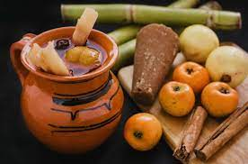

Ponche de frutas

Una delicios bebida tradicional de epocas decembrinas.
La mayoría de las recetas son dulces, pero a esta se le agrega un delicioso toque ácido.
Ingredientes
- Agua
- Tamarindo
- Naranja
- Piña
- Guayaba
- Manzana
- Pasas
- Ciruela pasa
- Caña
- Tejocote
- Piloncillo
- Canela
Preparación
- Poner a cocer los tejocotes en un poco de agua
- Limpiar y cocer el tamarindo
- En una olla con agua agregar canela, piloncillo, piña, manzana y guayaba
- Dejar cocer por unos minutos para que la fruta suelte el sabor
- Agregar las ciruelas y las pasas
- Quitar los tejocotes del fuego, pelarlos y agregarlos al ponche
- Agregar el tamarindo (recuerda colarlo para que no se vaya la fibra)
- Agregar la caña
- Dejar hervir hasta que la fruta esté suave